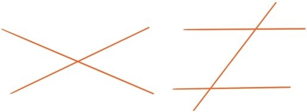

在日常生活中，我们经常使用“位置”这个词，但是从数学上看，这个词是非常模糊的。例如，一个人的位置，究竟是指他的头的位置，还是双脚的位置？这两个不同的位置都可以用来指人的位置，头的位置肯定比这个人的位置更精确。但是头的位置也是模糊的，这究竟是指嘴巴的位置，鼻子的位置，还是左眼或者右眼的位置？所以鼻子的位置又比头的位置精确，而鼻尖的位置又比鼻子的位置精确……
如果想无限精准地确定位置，就会抽象出“点”的概念，这是几何中最基本的概念之一。几何中的点，就是指空间中无限精确的位置，点不会占据任何空间，没有大小，厚度，长度。
和点的概念同样重要的是直线的概念。被拉直的细长头发丝，两边都望不到尽头的直行铁轨，参天大树的笔直树干，这些事物有个共同点，就是又直又长，当专注于这个共同点时，就会抽象出直线的概念。直线只有长度，没有粗细，宽度和厚度，而且是往两边方向无限延伸。直线这个概念其实并不陌生，在第一章中多次讲述的数轴就是直线。
直线上取一个点，会将直线分成两个部分，每个部分都称为射线，称这个点为射线的端点，射线只能往一个方向无限延伸。如果在直线上取两个点，那么直线在两点之间的部分就称为线段，线段的长度就是这两点的距离。
在同一个平面上的两条不同直线常常会相交于一个点。如果两条直线无论如何延伸都不会相交，就称它们是平行直线。
